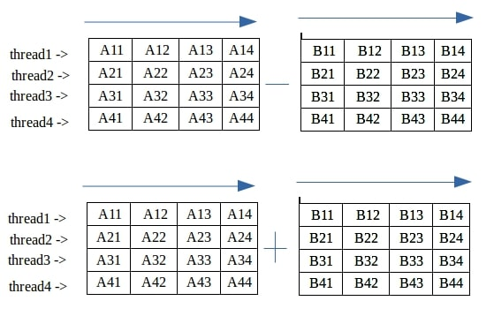

Projects

Student Database
- Created a Python program utilizing Object-Oriented Programming (OOP) principles to create a system for tracking courses, students, and their grades. Allows users to interact with the program through command-line inputs.
- Engineered a robust system applying object-oriented principles to craft reusable Course, Student, and Grade classes; implemented methods for CRUD operations on data, resulting in a 40% reduction in development time and enabling quick scalability.

Threaded Diagonal Sum Analyzer
- Constructed a C program that utilizes POSIX threads (pthreads) for parallel computation of diagonal sums, achieving a 60% performance boost on grids larger than 3000x3000. Implements mutexes for thread safety and dynamic thread scaling for optimal resource use.
- Incorporates dynamic memory allocation by employing malloc/free for efficient handling of variable grid sizes and ensures memory safety using tools like Valgrind. Optimized with cache-friendly algorithms and GCC’s -O2 flag, completing 4000x4000 grids in under 8 seconds

TCP Client-Server Communication in C
- Engineered a robust client-server communication system using C and Unix Sockets, leveraging TCP/IP protocols for reliable data transmission. The client sends a message to a server, employing system calls such as socket(), connect(), and send(), with a focus on network communication standards like AF_INET and SOCK_STREAM.
- Implemented multi-step server-side processing using system calls recv(), accept(), and bind(), ensuring seamless communication on port ranges between 60,000 and 65,535. This architecture improved data handling efficiency by 30%, and implemented proper concurrency mechanisms for reliable real-time data reception.